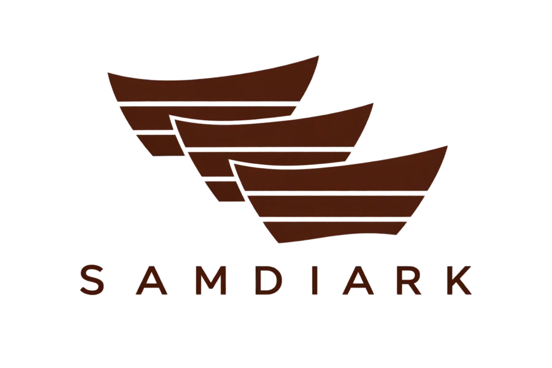
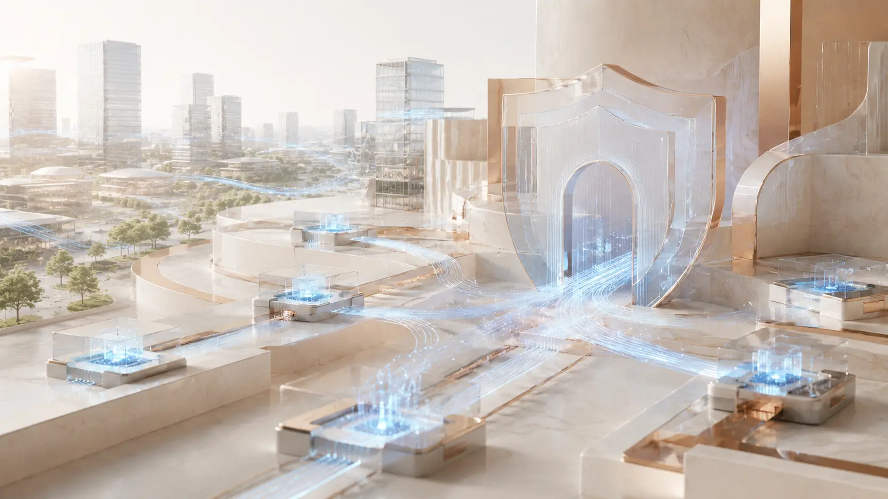

IT 개발
Business System Development
고객의 업무와 요구사항을 정확히 이해하고, 실제 현장에서 효율적으로 사용할 수 있는 IT 시스템을 설계하고 개발합니다.
- 업무 시스템 설계 및 구축
- 웹 기반 서비스 개발
- 기존 시스템 개선 및 고도화

IT DEVELOPMENT · OPERATION · CONSULTING
삼디아크는 IT 개발과 운영, 컨설팅을 통해
고객의 비즈니스가 더 안정적이고 효율적으로 성장하도록 함께합니다.

신뢰할 수 있는 기술 파트너
삼디아크는 고객의 업무 환경과 목표를 먼저 이해합니다. 필요한 기술을 정확하게 선택하고, 개발 이후의 안정적인 운영까지 고려하여 오래 사용할 수 있는 IT 환경을 만들어갑니다.
전문성과 책임감을 바탕으로
Business System Development
고객의 업무와 요구사항을 정확히 이해하고, 실제 현장에서 효율적으로 사용할 수 있는 IT 시스템을 설계하고 개발합니다.
Stable IT Operations
서비스가 안정적으로 지속될 수 있도록 시스템 상태와 업무 흐름을 세심하게 살피고, 변화에 맞춰 꾸준히 개선합니다.
Practical IT Consulting
비즈니스 목표와 현재 환경을 함께 분석하여, 기술 도입부터 실행 계획까지 현실적이고 효율적인 방향을 제안합니다.
CONTACT